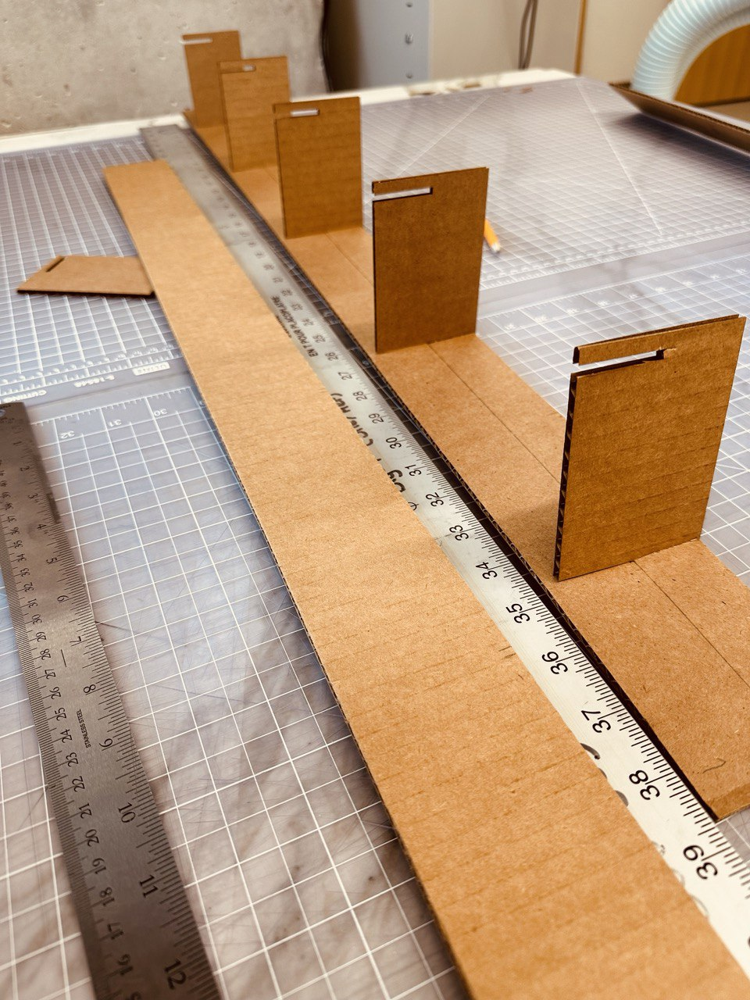
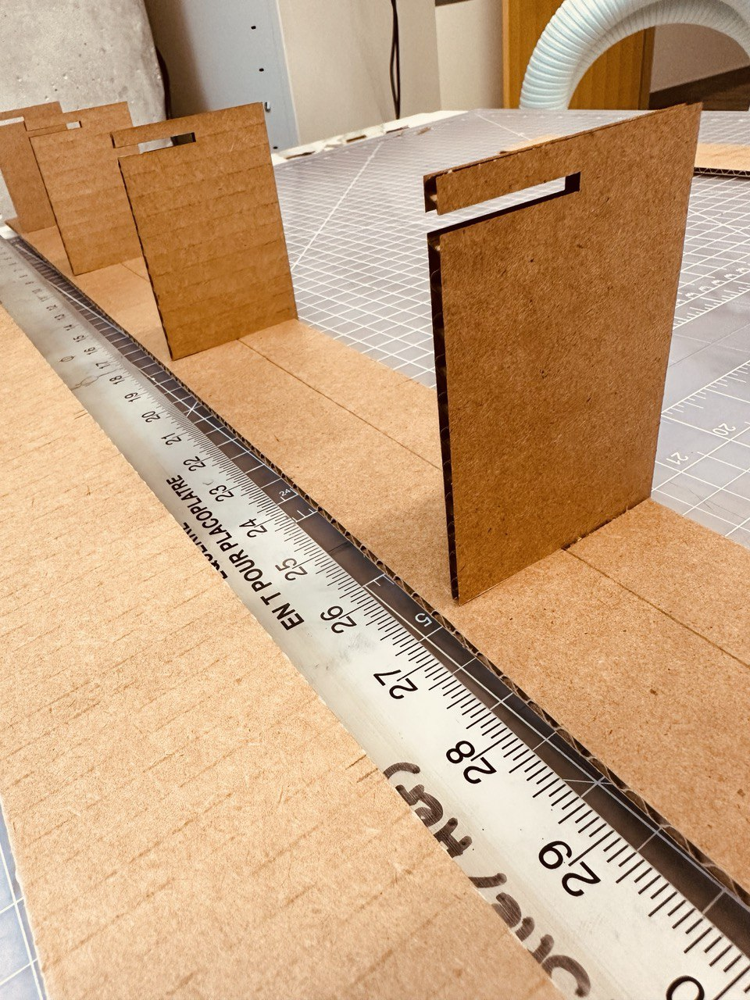
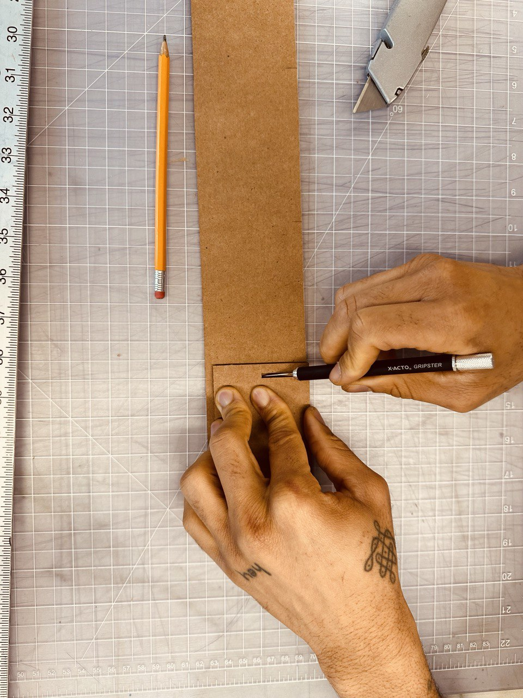
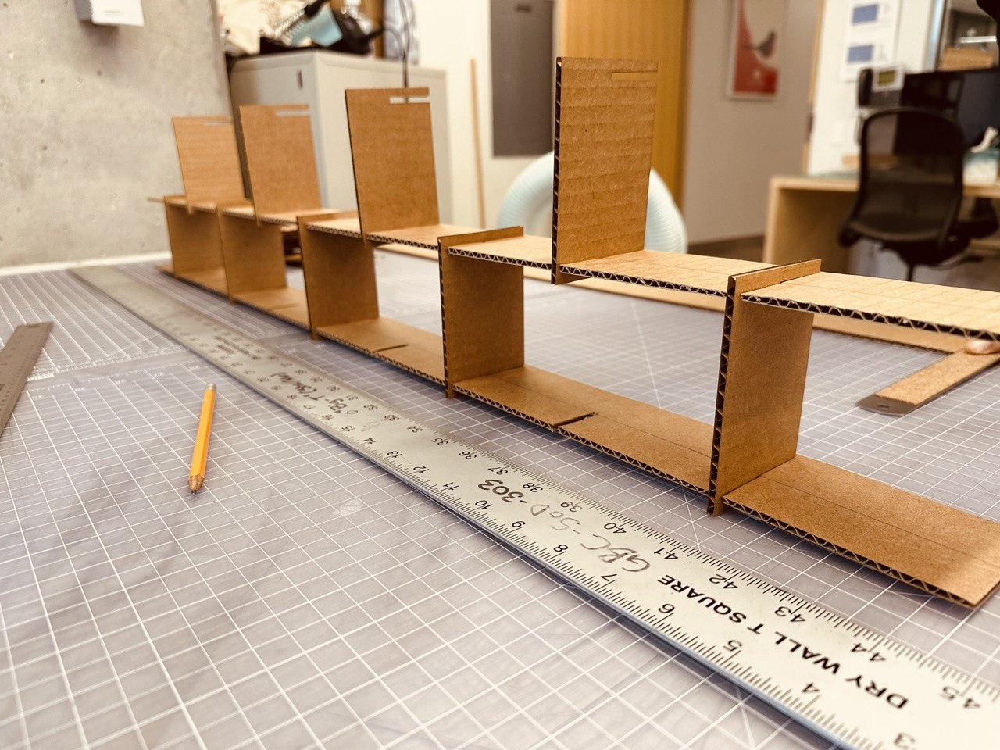
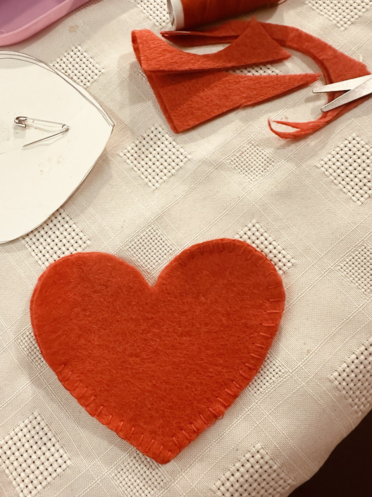
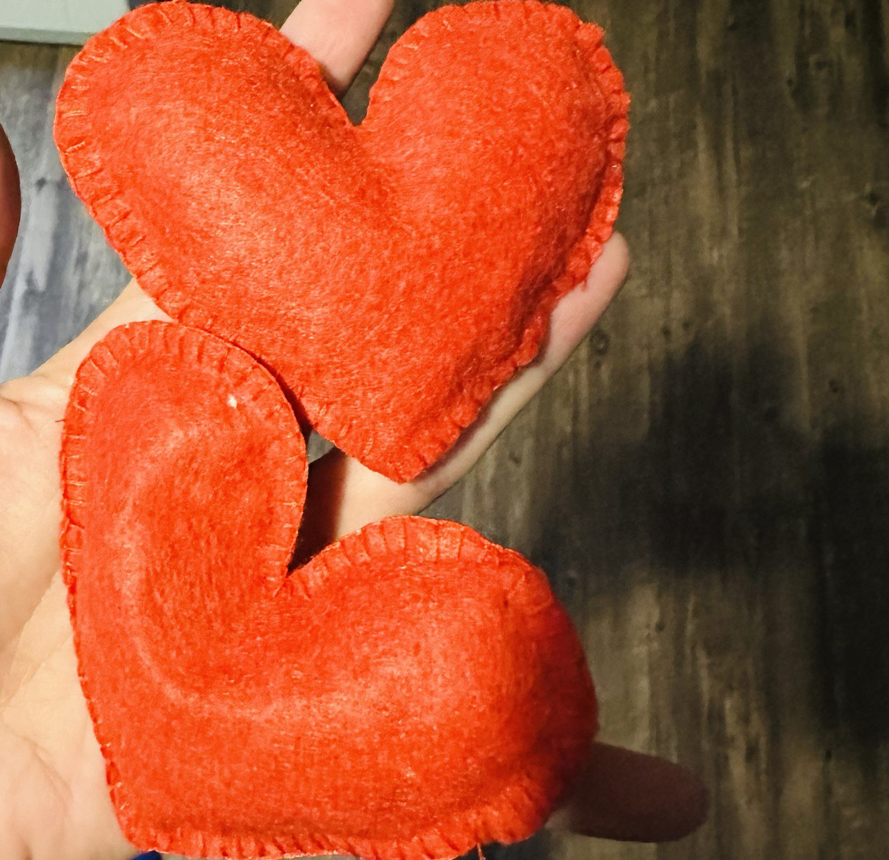
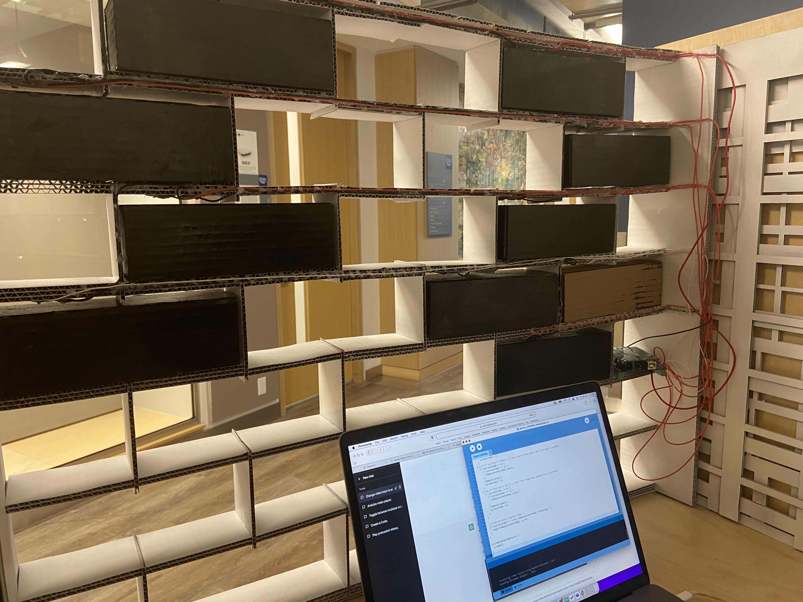

For this year's Physical Interfaces course, our team was tasked with creating an interactive experience to be showcased at a Fun Palace event. We began by brainstorming ideas and discussing the message we wanted to convey. From there, we carefully planned out each aspect of the installation, including the design and how visitors would interact with it.
The "Breaking Barriers" installation features several key aspects. The wall itself is meant to symbolize the system in which marginalized people face barriers within their community. To minimize environmental waste, we constructed the wall using recycled cardboard and designed it to be modular so it could be easily taken apart after the exhibition finished.
The bricks are a central part of the installation and represent the barriers that people face. Each brick is made from various materials, including cardboard, styrofoam, and playdoh. Each one serves a unique purpose within the exhibit.
In order to knock the bricks down, visitors use heart-shaped objects, made of felt and dried beans. When certain bricks are knocked over, the installation generates sounds of cheering and applause. We achieved this through the use of Arduino and processing code.
Finally, we created a series of music and speech videos that showcase what a world without barriers might look like. These videos were generated using artificial intelligence techniques, including ChatGPT for the speeches and MidJourney for the characters and music videos.
      